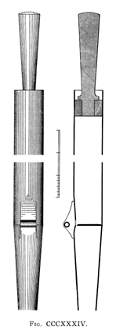

Zartflute anglicized German

|
Zartflöte German Zartflute anglicized German |
|
In his stop dictionary Audsley cites Seidel as attributing the invention of the Zartflöte to the German organ builder Friedrich Turley (1804-1855). In The Art of Organ-Building, however, he cites Seidel as attributing its invention to the German builder Tobias Turley (1773-1829), a claim supported by Wedgwood. Turley originally named his stop Gamba, but renamed it to Zartflöte at the request of Musikdirektor Wilke, after the German word zart meaning �delicate�. First introduced as an 8' stop in the organ in the Marienkirche, Wismar, Germany, it had small-scale open wood pipes and a tone that Wedgwood calls a hybrid of a Flute and a Fugara, and Audsley calls �extremely tender�.
In the late 1860's Edmund Schulze used the name in his organ in the Church of St. Bartholomew, Armley, England for a small-scale conical metal stop with a wooden bass. According to Audsley it had �an extremely soft and refined flute-tone�, but Bonavia-Hunt calls it a small-scaled Gemshorn, almost exactly the same as Schulze's Fernflöte at St. Mary's, Tyne Dock, England.
The stop was re-invented in 1896 by J. W. Whiteley, who described it (as quoted by Audsley) thus:
This stop is a modification of the Quintaten, with every suggestion of tonal coarseness removed. It bears the same relation to the ordinary Quintaten that a very refined Dulciana or Salicional does to an Open Diapason, the result being a light and bright flute-tone, with sufficient reedy quality to give it a distinctive character.
Audsley provides the following details of its construction:
Of all the metal stops yielding tones more or less resembling those of the Quintatens, the stop now under consideration may be pronounced the most beautiful. The Zartflöte in its covered form was invented by the distinguished English artist, Mr. John W. Whiteley, in the year 1896. The pipes forming this stop are of small scale, fully stopped, and have narrow mouths furnished with cylindrical harmonic-bridges. In [the illustration reproduced here] are given a Front View and Longitudinal Section of the chief portions of the tenor C pipe of the Zartflöte, 8 ft., or the largest pipe of the Zartflöte, 4 ft. The harmonic-bridge is of aluminium tubing, held, at a considerable distance from the lower lip of the mouth, between strong ears shaped as shown in the Section. The bridge is secured in position by projections, punched from the ears, which enter the tube at both ends. The scel of the stop, in the slow ratio 1:2.13, gives a C (2 ft.) pipe a diameter of 1.24 inches; the c1 pipe a diameter of 0.58 inch; and the c3 pipe a diameter of 0.40 inch. The mouths are unusually small, being about two-elevenths of the circumferences of their respective pipes. It will probably be found desirable to increase the widths of the mouths in the two higher octaves of one-fifth the circumference of the pipes. The harmonic-bridges vary in diameter from 0.25 inch at tenor C (2 ft. pipe) to 0.06 at the c4 pipe. It is only necessary to have six different sizes, changing them at about equal intervals in the compass. The stoppers are of soft cork rings glued to turned wooden handles, as indicated in the Longitudinal Section. In voicing the pipes a greater number of nicks are placed on the languids than on the lower lips. For instance, in the tenor C pipe the languid has eight nicks while the lower lip only has five. The nicks are very small and cleanly cut.
Bonavia-Hunt provides some additional information:
The Zartflöte of Whiteley is a small-scaled quintaten, being introduced in 1896 under the name of �phoneuma� in a number of Hope-Jones organs. Familiarly speaking, it is a stopped viol pipe, the prime and twelfth sounding simultaneously at equal strength. The tone is very delicate and quite soft. The scale at 2ft. C (4ft. ground tone) is 1 1/4 in. with a two-elevenths mouth. If the stopper be removed the pipe becomes a viol, and the voicing is done before the stopper is fitted. The roller-bridge is fixed at a greater distance from the mouth than is usual in viol treatment, and with this end in view the ears are made relatively longer.
Locher claims that the name Zartflöte has been used for the Wienerflöte. Wedgwood, writing at the beginning of the 20th century, states that in his time the Zartflöte is a small-scaled wooden or metal flute with a bright tone, usually found at 4' pitch.
Osiris contains seven examples of Zartflöte at 8' pitch, and ten at 4'. While half of them post-date Whiteley's invention, it is not known which (if any) of them are of the Whiteley type. The earliest known examples are listed below. No examples are known of Zart Flute, which is mentioned only by Wedgwood. Contributions welcome.
Zartflöte 8', Swell; Marienkirche, Wismar, Germany; Turley. This is the very first example (see above), and dates from the first half of the 19th century.
Zartflöte 4', Echowerk; Cathedral, Merseburg, Germany; Ladegast 1853-55. This example is wooden.
Zartflöte 8', Echo; Church of St. Batholomew, Armley, Yorkshire, England; Schulze 1866-69. (Details given above).
Zartflöte 8', Manual IV; Cathedral, Schwerin, Germany; Ladegast 1871. According to Audsley, this example is made of pine and pear-tree.
Would you like to hear what a Zartflöte sounds like?
For as little as $10 (US), you can sponsor a page in this Encyclopedia, and help purchase more sound samples!
|
Original website compiled by Edward L. Stauff. For educational use only. Zartflote.html - Last updated 30 December 2001. |
Home Full Index |